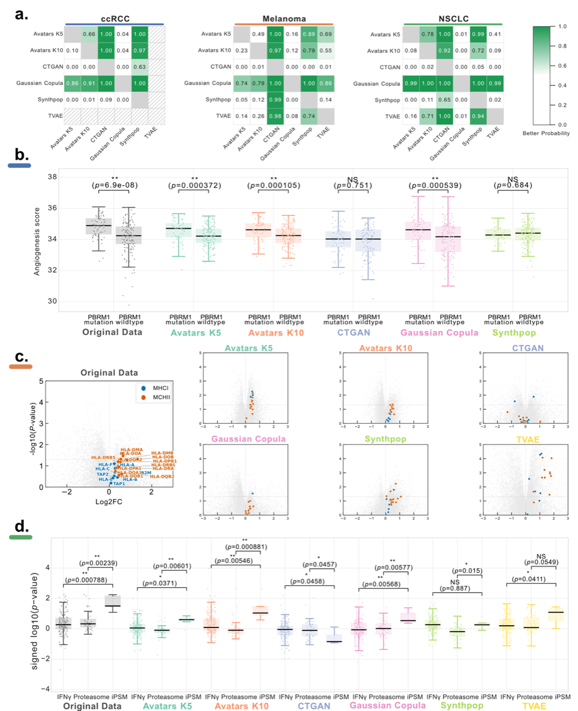

Differential Gene Expression (DGE) Analysis¶
Differential Gene Expression (DGE) analysis is a cornerstone of transcriptomics research, used to identify genes that show statistically significant changes in expression between different biological conditions (e.g., healthy vs. diseased, treated vs. untreated). In the context of SynOmicBench, DGE preservation is a critical metric for "narrow utility," as it measures whether synthetic data can replicate the biological signals necessary for discovery and hypothesis generation.
Overview¶
The goal of evaluating DGE in synthetic data is to determine if a synthetic dataset preserves the same set of differentially expressed genes (DEGs) as the original data. This involves not only matching the gene names but also maintaining the direction and magnitude of the expression changes (log2 fold changes) and the statistical significance (p-values/q-values).
SynOmicBench utilizes a standardized DGE workflow, typically involving tools like DESeq2 or edgeR for count data, or linear models for normalized expression values. The benchmarking framework compares the results obtained from real data against those from various synthetic counterparts.
Methodology¶
The evaluation of DGE preservation in SynOmicBench follows a systematic approach:
- Selection of Biological Contrast: A specific comparison is chosen from the original dataset (e.g., immunotherapy responders vs. non-responders in the Melanoma dataset).
- DGE Calculation: DGE analysis is performed on the original data and each synthetic dataset using identical parameters.
- Rank Score Computation: For each gene, a rank score is calculated as: $\(RankScore = sign(Log2FC) \times -\log_{10}(Q\text{-value})\)$ This score captures both the direction and the strength of the differential signal.
- Concordance Assessment: The rank scores from synthetic data are compared against the original data. SynOmicBench introduces the Gene Conservation Score (GCS) to quantify this agreement. GCS provides a single integrated measure that quantifies the weighted proportion of synthetic genes concordant with the original data across two key dimensions: regulation direction (up- or down-regulation) and level of statistical significance. By jointly accounting for these two aspects, GCS enables a one-shot assessment of whether synthetic data preserve not only the directionality of gene regulation but also their significance patterns. Higher GCS values indicate a larger proportion of synthetic genes that faithfully preserve both the directionality and the degree of statistical significance observed in the original data.
- Visualization: Scatter plots of rank scores (Original vs. Synthetic) are generated, divided into significance zones:
- Zone 1 & 2: Concordant non-significant genes (Lower-Left and Upper-Right).
- Zone 3 & 4: Concordant significant genes (Lower-Left and Upper-Right).
- Discordant Zones: Genes that are significant in one dataset but not the other, or show opposite directions of change.
Benchmark Results¶
Evaluation across multiple cohorts (ccRCC, Melanoma, NSCLC) reveals that the Gaussian Copula model consistently achieved the highest GCS values across all cohorts. Bayesian estimation over five replicates showed that Gaussian Copula achieved superior probabilities (exceeding 70%) compared to alternative methods. Additionally, Spearman's rank correlation was computed to assess the monotonic concordances of gene-wise log₂ fold-change (log₂FC) values between original and synthetic datasets. Gaussian Copula also achieved the highest correlations across three cancer types. The correlation values are modest among all SDG methods, especially on ccRCC datasets which contain over 40,000 gene expression profiles. Of note, there is one replicate generated by Gaussian Copula that reached a Spearman correlation of 0.63.
Biological Validation¶
To further validate biological utility, DGE-based analyses were applied to synthetic datasets to ensure they recapitulated the same biological signals found in the original data:
-
ccRCC - PBRM1 Alterations: PBRM1 alterations are associated with increased angiogenesis gene expression. Both Avatars (K5/K10) and Gaussian Copula successfully reproduced this clinical signal (Wilcoxon rank-sum test, P < 0.01).
-
Melanoma - MHC Class II Genes: Higher expression of 13 MHC class II-associated HLA genes was observed in treatment responders, with four genes (HLA-DMA, HLA-DMB, HLA-DOA, and HLA-DOB) reaching statistical significance (Wilcoxon rank-sum test, P < 0.05). While Avatars (K5/K10), Gaussian Copula, Synthpop, and TVAE successfully captured responder upregulation, the statistical significance was notably attenuated in the Avatars K10 and Gaussian Copula cohorts. Avatars K5 and TVAE exhibited an elevation in false-positive gene identifications.
-
NSCLC - Immunoproteasome System: A convergence of differentially expressed genes (PSME1, PSME2, PSMB8, PSMB9, and PSMB10) within the immunoproteasome system was significantly enriched in responders relative to canonical Hallmark IFN-γ targets (Wilcoxon rank-sum test, P < 0.01). These complex biological insights were successfully re-discovered in synthetic datasets generated by Avatars K10 and Gaussian Copula.

Figure 4: Comparison of Differential Gene Expression preservation across synthesis methods. Panels show the correlation of gene rank scores between real and synthetic datasets.
References¶
- Analysis notebook:
Manuscripts/Melanoma/NarrowUtility/DGE/GCS_analysis.ipynb - Source code:
src/SynOmics/metrics/narrow_utility/DGE.py
Key Observations¶
- Gaussian Copula is most effective: The combination of metric-based evaluation and biological replication identifies Gaussian Copula as the most effective SDG method for preserving DGE profiles in synthetic transcriptomic data.
- Avatars as runner-up: The two variations of Avatars shared the runner-up position, demonstrating the ability to re-discover all biological insights from original studies.
- Statistical methods more stable: Statistical methods (Gaussian Copula, Synthpop) generally show higher stability in preserving DGE signals compared to deep learning approaches.
- Biological signals preserved: Synthetic data generated by top-performing methods successfully recapitulated complex biological signals including angiogenesis associations, immune marker expression patterns, and proteasome system enrichment.
Code Example¶
The GCSAnalyzer class in SynOmicBench provides a streamlined way to evaluate DGE preservation.
import pandas as pd
from SynOmics.metrics.narrow_utility.DGE import GCSAnalyzer
# Load DGE results (e.g., from DESeq2)
dge_real = pd.read_csv("dge_results_real.csv")
dge_syn_path = "dge_results_synthetic.csv"
# Initialize the analyzer
# term_col: gene names, nes_col: Log2FC, q_col: adjusted p-value
analyzer = GCSAnalyzer(
term_col="Gene",
nes_col="Log2FC",
q_col="Q_value",
q_thr=0.05
)
# Process the results
(x, y, gcs, n1, n2, n3, n4, m, ori_size, aligned_size, seed) = \
analyzer.process_single_gsea_result(dge_real, dge_syn_path)
print(f"Gene-set Concordance Score: {gcs:.3f}")
print(f"Significant concordant genes: {n3 + n4}")
This analysis ensures that synthetic data remains biologically "fit for purpose," allowing researchers to perform preliminary analyses on synthetic data with confidence that their findings will translate back to the original biological context.